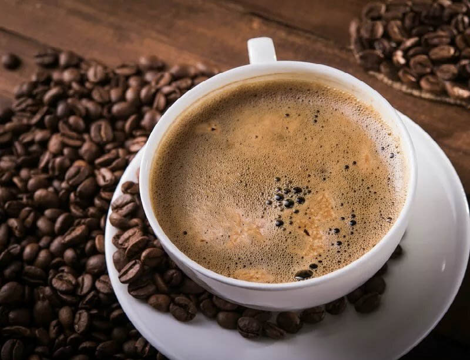
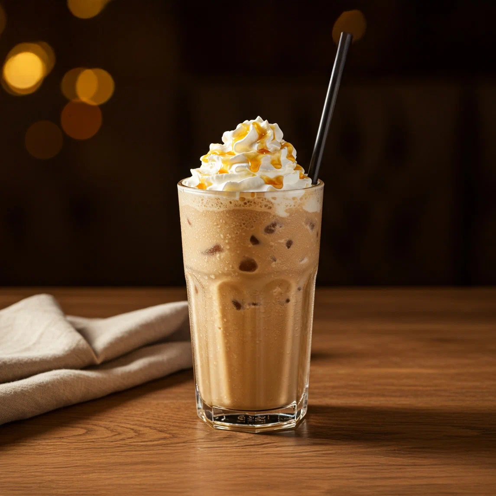
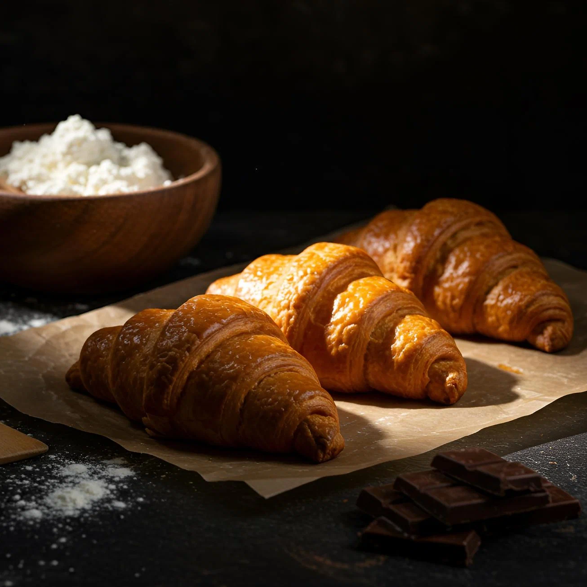

Американо
Американо – едва ли не самый популярный кофейный напиток в нашей стране. Он не такой крепкий, как классический эспрессо, и растянуть удовольствие можно подольше. А если добавить молока или сливок, то и вовсе будет идеально!

Банановый капучино
Необычное на первый взгляд сочетание банана и кофе очень удачное. Этот напиток понравится в первую очередь тем, кто любит кофе с мягким вкусом и легким ароматом.

Фраппучино
Вкусный летний вариант кофе – фраппучино. Это классический кофе с молоком, дополненный дроблёным в блендере льдом.

Круассан
Круассан — классическая французская выпечка с хрустящей корочкой и нежной слоёной текстурой. Обладает мягким сливочным вкусом и отлично подходит к кофе или чаю.